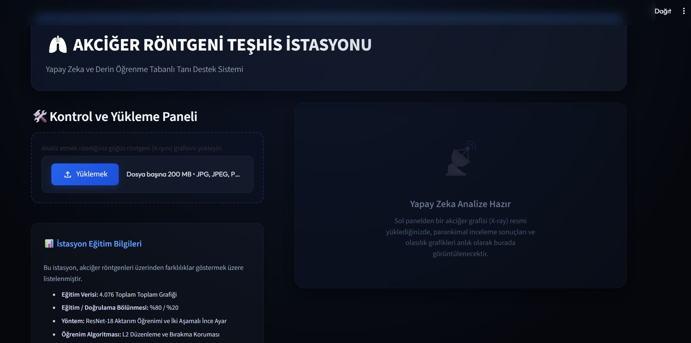
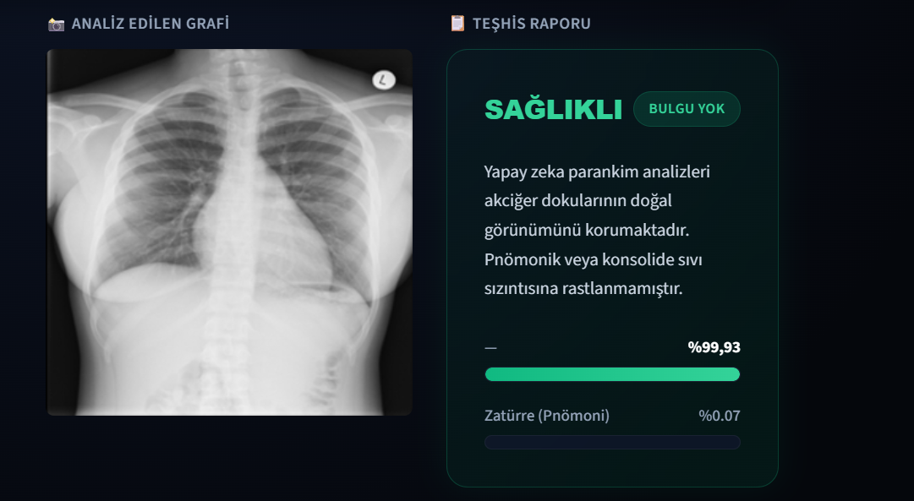
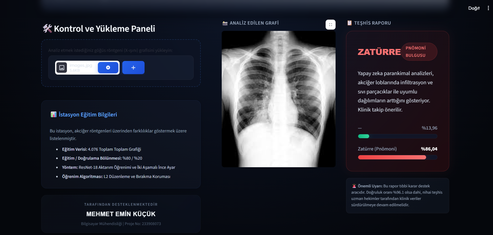

2025-2026 Eğitim Öğretim Yılı
Bu projenin temel amacı, göğüs röntgeni (X-ray) görüntülerini kullanarak hastanın akciğer durumunun "Normal" (Sağlıklı) veya "Zatürre" (Pnömoni) olduğunu otomatik olarak yüksek doğrulukla tespit eden derin öğrenme tabanlı bir sistem geliştirmektir. Bu sistem yardımıyla radyoloji uzmanlarının teşhis süreçlerini hızlandırmayı, tanı hata payını en aza indirmeyi ve son kullanıcılar için anlaşılır, şeffaf ve modern bir medikal web arayüzü sunmayı hedefledik.
Projenin Mart 2026'da başlayan geliştirme süreci ve teslimine kadar aylık bazda gerçekleştirilen çalışmalar aşağıda detaylandırılmıştır:
extract_and_split.py scriptinin kodlanması.Projemiz %100 oranında tamamlanmış ve tüm sistem entegrasyonu başarıyla gerçekleştirilmiştir. Elde edilen teknik kazanımlar, tasarım kararları ve detaylar şu şekildedir:
model.pth dosyası olarak kaydedilip Streamlit uygulamasına başarıyla bağlanmıştır.Bilgisayar mühendisliği standartlarına uygun olarak modüler şekilde kurgulanan projenin, en kritik derin öğrenme (Deep Learning) operasyonlarını üstlenen bazı kod blokları aşağıda sunulmuştur:
# Önceden eğitilmiş (Pre-trained) ResNet-18 modelinin ağırlıklarıyla yüklenmesi
model = models.resnet18(weights=models.ResNet18_Weights.IMAGENET1K_V1)
# Aşırı öğrenmeyi önlemek için Dropout katmanları içeren 2 çıkışlı yeni sınıflandırıcı kafa
model.fc = nn.Sequential(
nn.Dropout(0.4),
nn.Linear(model.fc.in_features, 128),
nn.ReLU(),
nn.Dropout(0.3),
nn.Linear(128, 2) # Sınıflar: Normal, Pneumonia
)# AŞAMA 1: Sadece yeni eklediğimiz sınıflandırıcı kafayı eğit (Omurga dondurulmuş)
for param in model.parameters():
param.requires_grad = False
for param in model.fc.parameters():
param.requires_grad = True
optimizer_phase1 = torch.optim.Adam(model.fc.parameters(), lr=0.001)
# AŞAMA 2: Tüm katmanları aç ve diferansiyel öğrenme hızı ile ince ayar yap
for param in model.parameters():
param.requires_grad = True
optimizer_phase2 = torch.optim.Adam([
{'params': [p for name, p in model.named_parameters() if 'fc' not in name], 'lr': 1e-5},
{'params': model.fc.parameters(), 'lr': 1e-4}
], weight_decay=1e-4)Uygulamamızın nihai sürümünden alınan test ekran görüntüleri aşağıda yer almaktadır. Sistem "Normal" ve "Zatürre (Pnömoni)" durumları için son derece yüksek teşhis yeteneğine sahiptir:



Projenin ara dönem (vize) raporundaki planlanan durumundan final aşamasına kadar geçirdiği değişimler ve farklar detaylandırılmıştır: